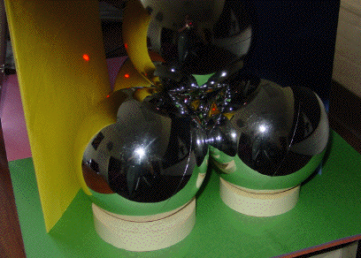
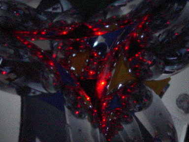
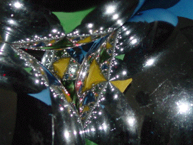

Finally, note that if a laser pointer is shined at any of the yellow regions, for example, the beam exits the tetrahedron through the opening in front of the yellow folder.
|  |
On the other hand, if the light is shined on what appears to be the boundary between the yellow and blue regions, the light exits the tetrahedron in many places, in front of the green, blue, and yellow folders.
Thus we have an optical expression of the Wada property.
Because the light has been split into so many pieces, it is difficult to see the light on the folders, unless the room is very, very dark.
Even then, photographing the light off the folders is difficult.
Instead of this, we show other evidence that the light bounces around the boundaries of the yellow, green, and blue regions.
On the left, we zoom out a bit and add another source of light, to emphasize the yellow, green, and blue regions.
|  |  |
Return to Procedure